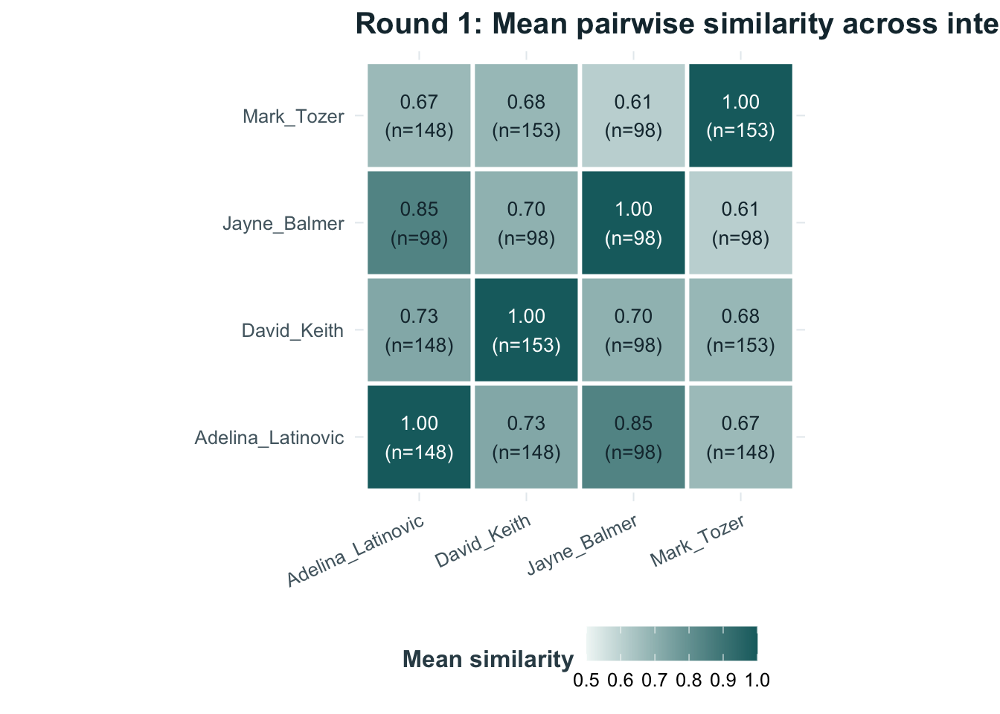
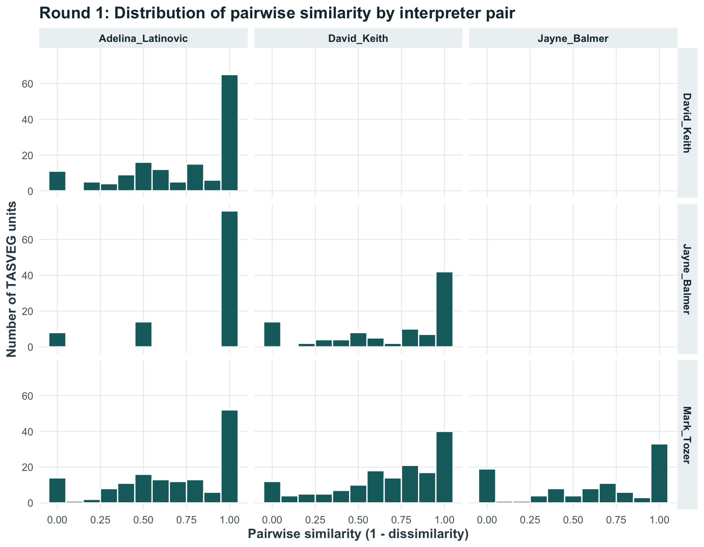
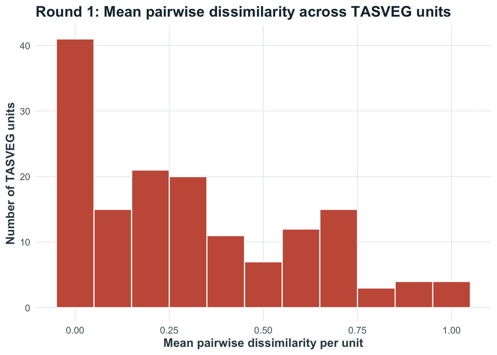
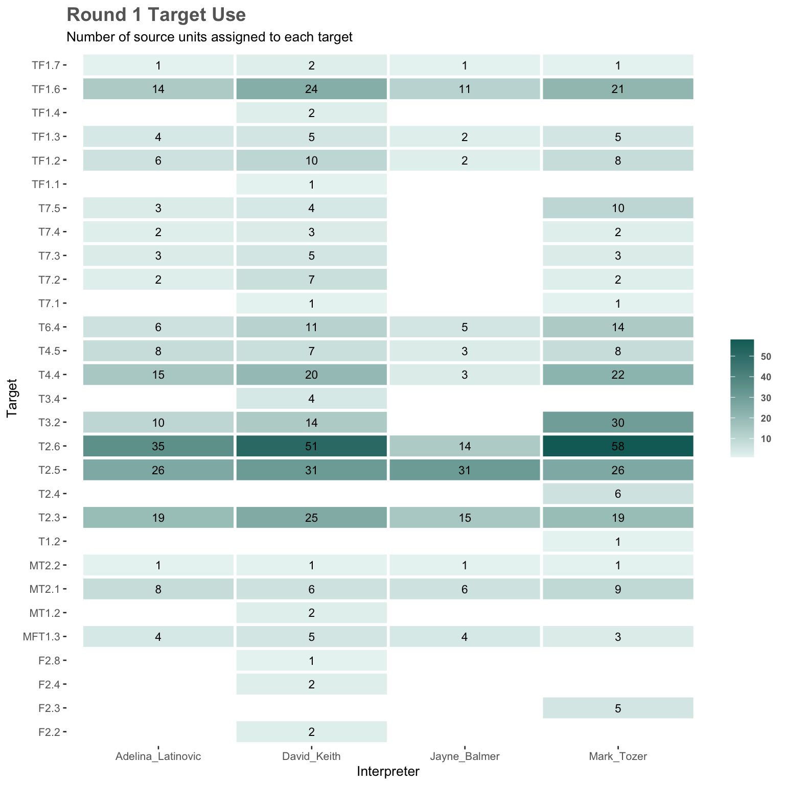
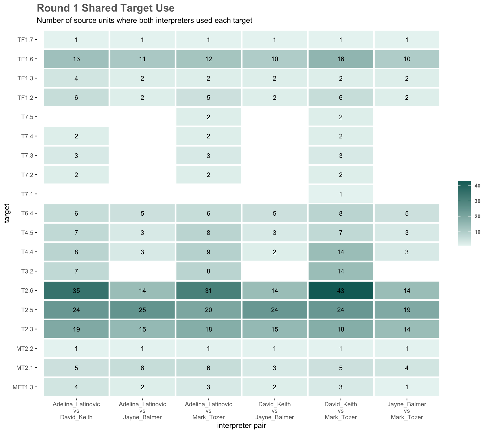
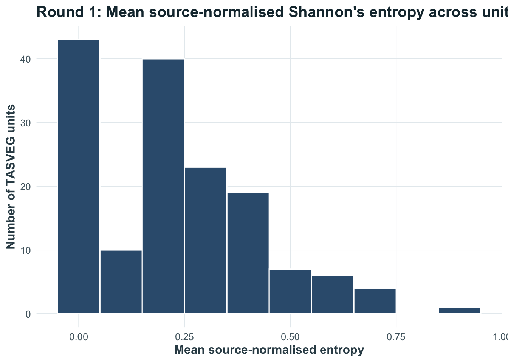
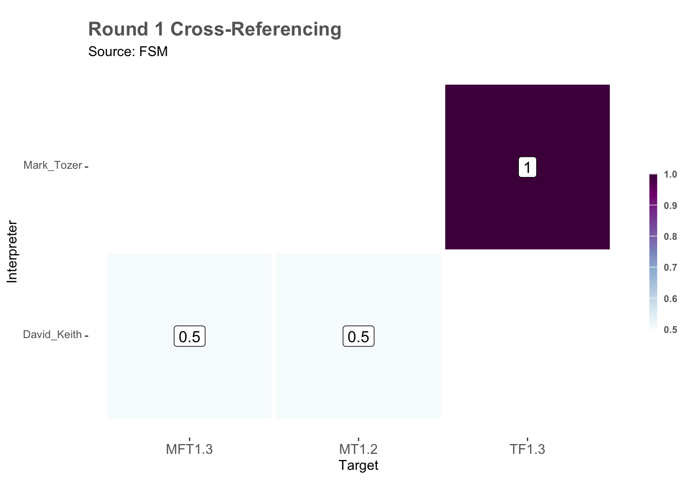
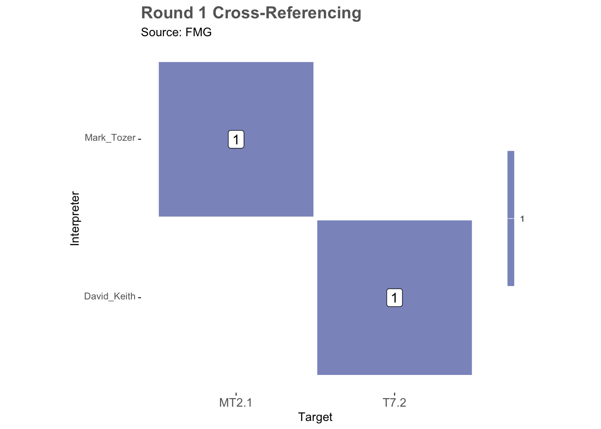

library(readr)
library(dplyr)
library(tidyr)
library(ecoSynthesis)
library(ggplot2)
here::i_am("analysis/round-1.qmd")
output_dir <- here::here("../results/XREFs")
source(here::here("../scripts/setup.R"))
source(here::here("../scripts/functions.R"))
load(here::here(output_dir, "lookup-tables.rda"))
load(here::here(output_dir, "memb-tables.rda"))8 Round one
In Round 1 of the structured expert elicitation (Martin et al. 2012; Hemming et al. 2018), four interpreters (Adelina_Latinovic, David_Keith, Jayne_Balmer, and Mark_Tozer) independently evaluated TASVEG 5.0 vegetation communities against IUCN GET Level 3 Ecosystem Functional Groups using the Technical Manual (Kitchener and Harris 2013) and IUCN cross-referencing guidelines (IUCN 2025).
Analysing Round 1 before facilitated group discussions serves two diagnostic goals:
- Inter-interpreter agreement (pairwise similarity / dissimilarity): identifies which TASVEG units elicit divergent target assignments across interpreters and which pairs of interpreters align most closely.
- Within-interpreter uncertainty (normalised Shannon’s entropy): measures how sharply or diffusely each interpreter distributes fuzzy membership across candidate EFGs, distinguishing crisp 1:1 assignments from inherently transitional or uncertain units.
Our setup for this R session loads ecoSynthesis, tidyverse/plotting packages, custom styling (scripts/setup.R), and the validated lookup and membership tables:
8.1 Filtering Round 1 and building a 3D membership matrix
We first filter TASVEG_clean to Round 1 and convert the long-format membership_tbl into a three-dimensional membership_matrix ([source, target, interpreter]) via ecoSynthesis::membership_matrix(). Inside this array, targets not used by an interpreter for an assessed unit are explicitly filled with 0, units an interpreter did not assess remain NA (so they are excluded from pairwise comparisons rather than treated as zeros), and any repeated (source, target, interpreter) rows (such as David_Keith on SLL, flagged in Chapter 7) are summed automatically:
TASVEG_first <- filter(TASVEG_clean, round == 1)
TASVEG_mtx_r1 <- membership_matrix(TASVEG_first)
TASVEG_mtx_r1<membership_matrix> 153 sources x 29 targets x 4 interpreters• Adelina_Latinovic: 148 source units assessed• David_Keith: 153 source units assessed• Jayne_Balmer: 98 source units assessed• Mark_Tozer: 153 source units assessedUse `unclass(data)[source, target, interpreter]` to view values.In Round 1, David_Keith and Mark_Tozer assessed all 153 eligible units, Adelina_Latinovic assessed 148 units, and Jayne_Balmer assessed 98 units, spanning 29 candidate EFGs in total.
8.2 Inter-interpreter agreement (calc_agreement)
For any two interpreters with membership vectors \(\mathbf{a}\) and \(\mathbf{b}\) over the target EFGs for a shared source unit, ecoSynthesis::calc_agreement() computes half-\(L_1\) (Manhattan / total variation) dissimilarity:
\[D(\mathbf{a}, \mathbf{b}) = \frac{1}{2} \sum_{k} |a_k - b_k|, \qquad S(\mathbf{a}, \mathbf{b}) = 1 - D(\mathbf{a}, \mathbf{b})\]
When both vectors sum to 1, \(D(\mathbf{a}, \mathbf{b})\) equals the Bray–Curtis / Czekanowski dissimilarity (Bray and Curtis 1957) and represents the exact proportion of membership mass that would need to be reallocated to make the two profiles identical (\(S = 1\) for identical profiles; \(S = 0\) for completely disjoint target assignments).
8.2.1 Global agreement between interpreter pairs
Calling calc_agreement(TASVEG_mtx_r1) with the default by_source = FALSE returns a symmetric summary table across all interpreter pairs, reporting the number of jointly assessed units (n_units), mean and median similarity, share of virtually identical profiles (dissimilarity < 0.001), and mean dissimilarity:
ag1_global <- calc_agreement(TASVEG_mtx_r1)
ag1_global# A tibble: 16 × 7
interpreter_x interpreter_y n_units mean_similarity median_similarity
<chr> <chr> <int> <dbl> <dbl>
1 Adelina_Latinovic Adelina_Latinovic 148 1 1
2 Adelina_Latinovic David_Keith 148 0.727 0.8
3 Adelina_Latinovic Jayne_Balmer 98 0.847 1
4 Adelina_Latinovic Mark_Tozer 148 0.671 0.7
5 David_Keith Adelina_Latinovic 148 0.727 0.8
6 David_Keith David_Keith 153 1 1
7 David_Keith Jayne_Balmer 98 0.697 0.875
8 David_Keith Mark_Tozer 153 0.680 0.8
9 Jayne_Balmer Adelina_Latinovic 98 0.847 1
10 Jayne_Balmer David_Keith 98 0.697 0.875
11 Jayne_Balmer Jayne_Balmer 98 1 1
12 Jayne_Balmer Mark_Tozer 98 0.609 0.7
13 Mark_Tozer Adelina_Latinovic 148 0.671 0.7
14 Mark_Tozer David_Keith 153 0.680 0.8
15 Mark_Tozer Jayne_Balmer 98 0.609 0.7
16 Mark_Tozer Mark_Tozer 153 1 1
# ℹ 2 more variables: share_identical <dbl>, mean_dissimilarity <dbl>Visualising ag1_global as a tile matrix summarises overall pairwise alignment in Round 1 at a glance:
ggplot(ag1_global, aes(x = interpreter_x, y = interpreter_y, fill = mean_similarity)) +
geom_tile(colour = "white", linewidth = 1) +
geom_text(
aes(
label = sprintf("%.2f\n(n=%d)", mean_similarity, n_units),
colour = mean_similarity > 0.85
),
size = 3.5
) +
scale_fill_gradient(low = teal_low, high = teal_high, limits = c(0.5, 1)) +
label_colour_scale +
labs(
title = "Round 1: Mean pairwise similarity across interpreters",
x = NULL,
y = NULL,
fill = "Mean similarity"
) +
coord_fixed() +
theme_wp3() +
theme(axis.text.x = element_text(angle = 25, hjust = 1))
8.2.2 Per-unit pairwise dissimilarity
Setting by_source = TRUE returns every unique interpreter pair per source unit (743 unit-pair comparisons in Round 1). Plotting similarity histograms faceted by interpreter pair shows how much agreement is concentrated at \(S = 1\) versus spread across partial or zero overlap:
ag1_by_source <- calc_agreement(TASVEG_mtx_r1, by_source = TRUE)
ggplot(ag1_by_source, aes(x = similarity)) +
geom_histogram(binwidth = 0.1, fill = teal_high, colour = "white") +
facet_grid(rows = vars(interpreter_x), cols = vars(interpreter_y)) +
labs(
title = "Round 1: Distribution of pairwise similarity by interpreter pair",
x = "Pairwise similarity (1 - dissimilarity)",
y = "Number of TASVEG units"
) +
theme_wp3()
NoteOverlap & conflict:
ecoSynthesis::calc_agreement() vs. scripts/functions.R
scripts/functions.R contains earlier prototype helpers—pairwise_dissimilarity(), summary_disagreement(), and plot_pairwise_diss()—that compute the exact same half-\(L_1\) metric \(D = \frac{1}{2}\sum_k |a_k - b_k|\) directly on a membership_tbl. Verification across all 743 Round 1 pairs and 1,530 Round 2 pairs confirms that ecoSynthesis::calc_agreement(membership_matrix(df), by_source = TRUE) produces numerically identical similarity and dissimilarity values (maximum difference \(< 10^{-9}\)).
We prefer ecoSynthesis::calc_agreement() here because it: 1. provides both global (by_source = FALSE) and per-source (by_source = TRUE) summaries in one consistent interface; 2. supports targeted subsetting via sources = and targets =; and 3. avoids a scoping bug in scripts/functions.R::plot_pairwise_diss(), which references a global variable named pd rather than its function argument x.
Note that calc_agreement()’s round argument is not yet implemented in v0.0.0.9005, so we filter TASVEG_clean to a single round before calling membership_matrix().
Aggregating ag1_by_source by source ranks all 153 TASVEG communities from highest to lowest mean pairwise disagreement, and plots the overall distribution across units:
unit_disagreement_r1 <- ag1_by_source |>
group_by(VEGCODE = source) |>
summarise(
mean_dissimilarity = mean(dissimilarity),
min_dissimilarity = min(dissimilarity),
max_dissimilarity = max(dissimilarity),
n_pairs = n(),
.groups = "drop"
) |>
arrange(desc(mean_dissimilarity), VEGCODE)
message(sprintf(
"%s of %s units have identical profiles from every interpreter in Round 1.",
sum(unit_disagreement_r1$max_dissimilarity < 0.001),
nrow(unit_disagreement_r1)
))36 of 153 units have identical profiles from every interpreter in Round 1.head(unit_disagreement_r1, 10)# A tibble: 10 × 5
VEGCODE mean_dissimilarity min_dissimilarity max_dissimilarity n_pairs
<chr> <dbl> <dbl> <dbl> <int>
1 FMG 1 1 1 1
2 FPE 1 1 1 1
3 FSM 1 1 1 1
4 FWU 1 1 1 1
5 AWU 0.942 0.65 1 6
6 NBS 0.933 0.8 1 3
7 AHL 0.915 0.49 1 6
8 NLN 0.883 0.6 1 6
9 SKA 0.85 0.55 1 3
10 GSL 0.833 0.7 1 3ggplot(unit_disagreement_r1, aes(x = mean_dissimilarity)) +
geom_histogram(binwidth = 0.1, fill = rust_high, colour = "white") +
labs(
title = "Round 1: Mean pairwise dissimilarity across TASVEG units",
x = "Mean pairwise dissimilarity per unit",
y = "Number of TASVEG units"
) +
theme_wp3()
8.2.3 Targeted subsetting with sources and targets
calc_agreement() can also isolate agreement for specific subsets of source units or target EFGs—for example, comparing interpreters on two contested wetland/sedgeland communities (FSM and FMG):
calc_agreement(TASVEG_mtx_r1, sources = c("FSM", "FMG"), by_source = TRUE)# A tibble: 2 × 5
source interpreter_x interpreter_y similarity dissimilarity
<chr> <chr> <chr> <dbl> <dbl>
1 FSM Mark_Tozer David_Keith 0 1
2 FMG Mark_Tozer David_Keith 0 18.3 Target usage patterns across interpreters
Beyond pairwise scores, visualising which target EFGs each interpreter selects helps identify systematic classification preferences or isolated target choices before group discussion.
First, ecoSynthesis::membership_target_heatmap() plots how many TASVEG communities each interpreter assigned to each candidate EFG in Round 1 (empty cells indicate the interpreter never used that EFG):
membership_target_heatmap(TASVEG_first) +
labs(title = "Round 1 Target Use")
Second, ecoSynthesis::membership_target_pair_heatmap() counts how many TASVEG communities each pair of interpreters co-assigned to the same EFG, highlighting targets with strong shared uptake versus targets invoked by only a single interpreter:
membership_target_pair_heatmap(TASVEG_first)
8.4 Within-interpreter uncertainty: Shannon’s entropy
While pairwise dissimilarity captures disagreement between interpreters, normalised Shannon’s entropy (Shannon 1948; Pielou 1966) captures the fuzziness or ambiguity within an interpreter’s membership vector \(\mathbf{p} = (p_1, \dots, p_N)\):
\[H_{\text{norm}}(\mathbf{p}; N) = \begin{cases} 0 & \text{if } N \le 1 \\ -\dfrac{\sum_{k: p_k > 0} p_k \log_2(p_k)}{\log_2(N)} & \text{if } N > 1 \end{cases}\]
Depending on the normalisation denominator \(N\), ecoSynthesis computes three complementary entropy estimands:
- Interpreter-normalised (\(N = S\), the number of non-zero targets selected by that interpreter): measures internal evenness—how evenly weight is split among the interpreter’s own chosen candidates.
- Source-normalised (\(N = N_{\text{source}}\), total distinct candidates considered by any interpreter for that source unit): standardises interpreters evaluating the same TASVEG community against a shared candidate pool.
- Set-normalised (\(N = N_{\text{set}}\), total distinct EFGs used across the whole round): standardises every profile against the full set of target groups in the dataset.
8.4.1 Worked example with calc_shannons_entropy()
Below we apply ecoSynthesis::calc_shannons_entropy() directly to Mark_Tozer’s Round 1 membership profile for FMG (Melaleuca gibbosa heathland) to illustrate how the three normalisation bases scale the same probability vector:
fmg_slice <- unclass(TASVEG_mtx_r1)["FMG", , ]
active_for_fmg <- rowSums(fmg_slice, na.rm = TRUE) > 0
p_set <- fmg_slice[, "Mark_Tozer"]
p_source <- p_set[active_for_fmg]
tibble(
Normalisation = c(
sprintf("Interpreter-normalised (S = %d)", sum(p_set > 0)),
sprintf("Source-normalised (N_source = %d)", length(p_source)),
sprintf("Set-normalised (N_set = %d)", length(p_set))
),
Entropy = c(
calc_shannons_entropy(p_source),
calc_shannons_entropy(p_source, N = length(p_source)),
calc_shannons_entropy(p_set, N = length(p_set))
)
)# A tibble: 3 × 2
Normalisation Entropy
<chr> <dbl>
1 Interpreter-normalised (S = 1) 0
2 Source-normalised (N_source = 2) 0
3 Set-normalised (N_set = 29) 08.4.2 Round 1 entropy summaries (calc_entropy_tbl)
ecoSynthesis::calc_entropy_tbl() computes all three normalised entropy metrics across the full membership table and aggregates them via overall = "overall", "by_interpreter", "by_source", or "by_target".
First, we inspect overall and interpreter-level Round 1 entropy—note that Jayne_Balmer assigned crisp 100% single-target memberships across all 98 units she assessed in Round 1 (mean entropy = 0), whereas Mark_Tozer and David_Keith expressed greater partial-membership fuzziness:
calc_entropy_tbl(TASVEG_first, overall = "overall")# A tibble: 1 × 4
round mean_entropy_source_norm…¹ mean_entropy_interpr…² mean_entropy_set_nor…³
<dbl> <dbl> <dbl> <dbl>
1 1 0.228 0.285 0.0642
# ℹ abbreviated names: ¹mean_entropy_source_normalised,
# ²mean_entropy_interpreter_normalised, ³mean_entropy_set_normalisedcalc_entropy_tbl(TASVEG_first, overall = "by_interpreter")# A tibble: 4 × 5
expert round mean_by_interpreter_entropy_s…¹ mean_by_interpreter_…²
<chr> <dbl> <dbl> <dbl>
1 Mark_Tozer 1 0.421 0.510
2 David_Keith 1 0.314 0.393
3 Adelina_Latinovic 1 0.0912 0.128
4 Jayne_Balmer 1 0 0
# ℹ abbreviated names: ¹mean_by_interpreter_entropy_source_normalised,
# ²mean_by_interpreter_entropy_interpreter_normalised
# ℹ 1 more variable: mean_by_interpreter_entropy_set_normalised <dbl>Next, we identify the TASVEG communities (by_source) and IUCN GET target groups (by_target) associated with the highest mean within-interpreter uncertainty in Round 1, and plot the distribution of source-normalised entropy across all 153 units:
ent1_by_source <- calc_entropy_tbl(TASVEG_first, overall = "by_source")
head(ent1_by_source, 10)# A tibble: 10 × 5
VEGCODE round mean_by_source_entropy_source_normalised mean_by_source_entro…¹
<chr> <dbl> <dbl> <dbl>
1 DGL 1 0.927 0.927
2 NAR 1 0.720 0.720
3 DAD 1 0.713 0.713
4 SWR 1 0.674 0.987
5 DAZ 1 0.655 0.655
6 DMO 1 0.647 0.647
7 DPU 1 0.617 0.617
8 SSK 1 0.617 0.617
9 DVG 1 0.588 0.588
10 DVF 1 0.564 0.564
# ℹ abbreviated name: ¹mean_by_source_entropy_interpreter_normalised
# ℹ 1 more variable: mean_by_source_entropy_set_normalised <dbl>calc_entropy_tbl(TASVEG_first, overall = "by_target") |>
head(10)# A tibble: 10 × 5
EFG round mean_by_target_entropy_source_normalised mean_by_target_entropy…¹
<chr> <dbl> <dbl> <dbl>
1 T7.1 1 0.498 0.621
2 T1.2 1 0.392 0.667
3 T4.4 1 0.369 0.446
4 T3.2 1 0.299 0.428
5 T2.6 1 0.296 0.365
6 T7.5 1 0.288 0.413
7 TF1.2 1 0.286 0.421
8 T2.5 1 0.284 0.386
9 T3.4 1 0.280 0.425
10 T4.5 1 0.273 0.376
# ℹ abbreviated name: ¹mean_by_target_entropy_interpreter_normalised
# ℹ 1 more variable: mean_by_target_entropy_set_normalised <dbl>ggplot(ent1_by_source, aes(x = mean_by_source_entropy_source_normalised)) +
geom_histogram(binwidth = 0.1, fill = "#355C7D", colour = "white") +
labs(
title = "Round 1: Mean source-normalised Shannon's entropy across units",
x = "Mean source-normalised entropy",
y = "Number of TASVEG units"
) +
theme_wp3()
8.5 Inspecting the most contested Round 1 units
Finally, we inspect the two communities with the highest Round 1 pairwise dissimilarity (FSM and FMG) using their TASVEG lookup descriptions and ecoSynthesis::membership_tile_plot():
TASVEG |>
dplyr::filter(VEGCODE == "FSM") |>
dplyr::glimpse()Rows: 1
Columns: 4
$ VEG_GROUP <chr> "Agricultural, urban and exotic vegetation"
$ VEGCODE <chr> "FSM"
$ VEGCODE_D <chr> "(FSM) Spartina marshland"
$ eligible <lgl> TRUEdplyr::filter(TASVEG_first, VEGCODE == "FSM") |>
membership_tile_plot() +
labs(title = "Round 1 Cross-Referencing")
TASVEG |>
dplyr::filter(VEGCODE == "FMG") |>
dplyr::glimpse()Rows: 1
Columns: 4
$ VEG_GROUP <chr> "Agricultural, urban and exotic vegetation"
$ VEGCODE <chr> "FMG"
$ VEGCODE_D <chr> "(FMG) Marram grassland"
$ eligible <lgl> TRUEdplyr::filter(TASVEG_first, VEGCODE == "FMG") |>
membership_tile_plot() +
labs(title = "Round 1 Cross-Referencing")